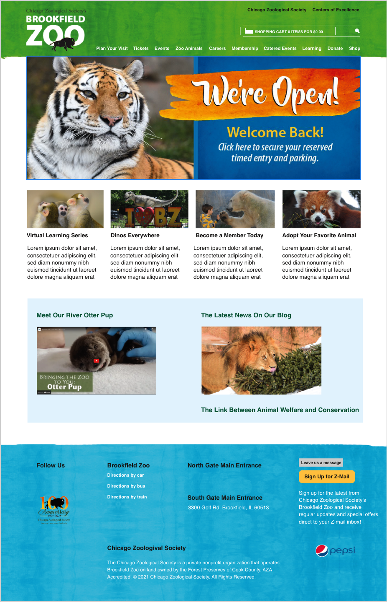

Steps
#1
#2
After putting the website address into Pingdom.com. Here are my thoughts about improving the site performance usability. Firstly, by lowering the number of pictures that are on the site, because according to the "content size by content type" table. Images take up 80% of the whole thing, which in the end makes it slow down because with all the high-resolution Images loading all at once when you click to open it will, eventually start slowing the site down. Secondly, redirecting users to new pages. Having a lot of links like images or words that will bring users to new pages are good and useful, but at the same time, it could also slow down the speed of the website.
#3
After going through WAVE with the Brookfield Zoo site address, here are my thoughts about improving accessibility. Firstly, the most errors that came up right away were that 10 linked images were missing their alternative text, which is easy enough to fix and helps the site maintain its professional look even if the site or images don't work. Secondly, like the usability above, limit the number of redirects. Having too many links that go to the same page could confuse users when they are trying to find something else as there are 6 alerts of a redundant link on the site.